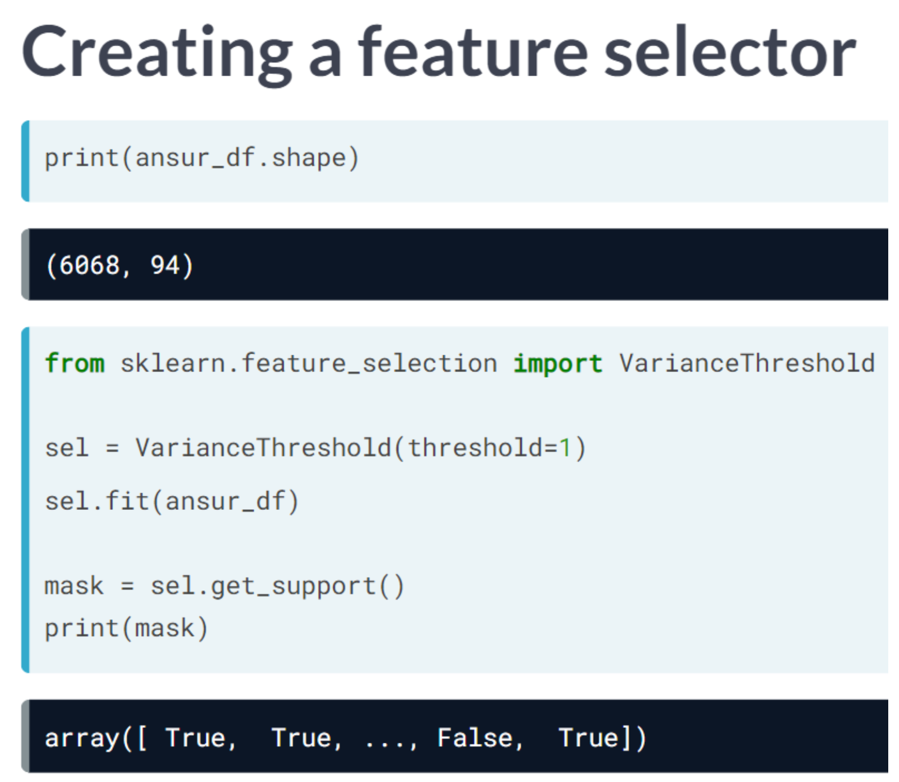
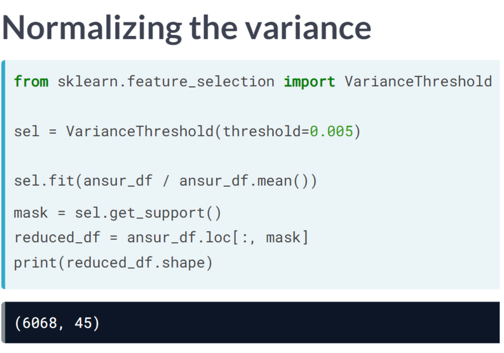
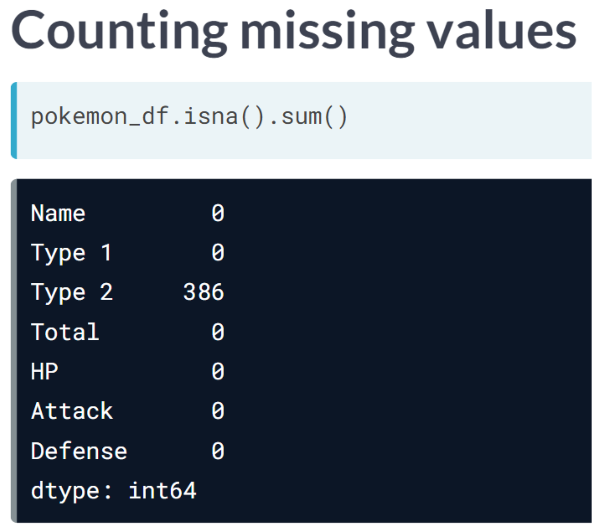
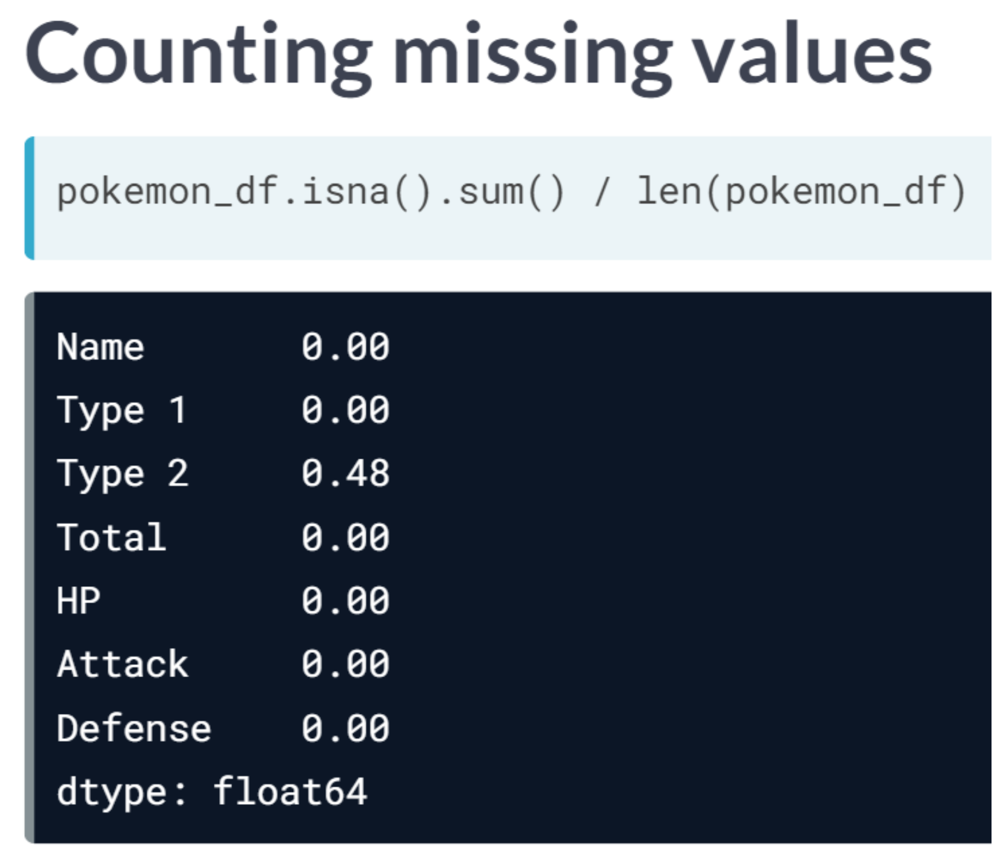
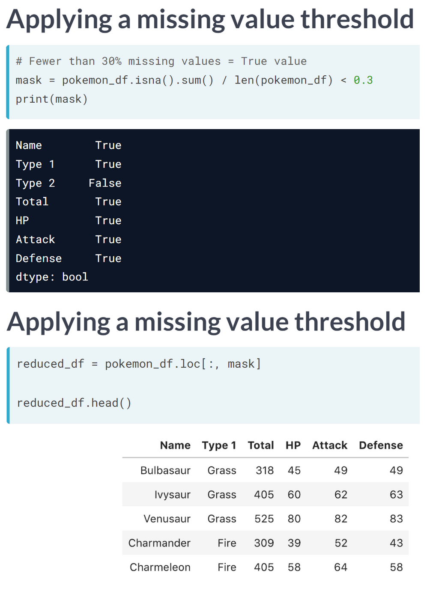

Code
import pandas as pd
import numpy as np
import matplotlib.pyplot as plt
import seaborn as sns
plt.rcParams['figure.figsize'] = (7, 7)As we progress through feature selection, we’ll learn how dimensionality reduction can help us overcome its curse. We’ll be introduced to a variety of techniques for identifying and removing features that don’t add much value to your data. Either because they have little variance, too many missing values, or because they are strongly correlated with other features.
This Feature Selection I - Selecting for Feature Information is part of Datacamp course: Dimensionality Reduction in Python
This is my learning experience of data science through DataCamp
import pandas as pd
import numpy as np
import matplotlib.pyplot as plt
import seaborn as sns
plt.rcParams['figure.figsize'] = (7, 7)We will keep working with the ANSUR dataset. Before we can build a model on our dataset, we should first decide on which feature you want to predict. In this case, we’re trying to predict gender.
we need to extract the column holding this feature from the dataset and then split the data into a training and test set. The training set will be used to train the model and the test set will be used to check its performance on unseen data.
ansur_male = pd.read_csv('dataset/ANSUR_II_MALE.csv')
ansur_female = pd.read_csv('dataset/ANSUR_II_FEMALE.csv')
ansur_df = pd.concat([ansur_male, ansur_female])
# unused columns in the dataset
unused = ['Branch', 'Component', 'BMI_class', 'Height_class', 'BMI', 'weight_kg', 'stature_m']
# Drop the non-numeric columns from df
ansur_df.drop(unused, axis=1, inplace=True)from sklearn.model_selection import train_test_split
# Select the Gender column as the feature to be predict (y)
y = ansur_df['Gender']
# Remove the Gender column to create the training data
X = ansur_df.drop('Gender', axis=1)
# Perform a 70% train and 30% test data split
X_train, X_test, y_train, y_test = train_test_split(X, y, test_size=0.3)
print("{} rows in test set vs. {} in training set. {} Features.".format(
X_test.shape[0], X_train.shape[0], X_test.shape[1]
))1821 rows in test set vs. 4247 in training set. 91 Features.Above we split the dataset into X_train, X_test, y_train, and y_test. These datasets have been pre-loaded for you. We’ll now create a support vector machine classifier model (SVC()) and fit that to the training data. You’ll then calculate the accuracy on both the test and training set to detect overfitting.
from sklearn.svm import SVC
from sklearn.metrics import accuracy_score
# Create an instance of the Support Vector Classification class
svc = SVC()
# Fit the model to the training data
svc.fit(X_train, y_train)
# Calculate accuracy scores on both train and test data
accuracy_train = accuracy_score(y_train, svc.predict(X_train))
accuracy_test = accuracy_score(y_test, svc.predict(X_test))
print("{0:.1%} accuracy on test set vs. {1:.1%} on training set".format(accuracy_test,
accuracy_train))
print("\nCurrent data doesn't show overfitting. But example in datacamp shows overfitting from dataset.")98.9% accuracy on test set vs. 99.0% on training set
Current data doesn't show overfitting. But example in datacamp shows overfitting from dataset.ansur_df_overfit = pd.read_csv('dataset/ansur_overfit.csv')
# Select the Gender column as the feature to be predict (y)
y = ansur_df_overfit['Gender']
# Remove the Gender column to create the training data
X = ansur_df_overfit.drop('Gender', axis=1)
# Perform a 70% train and 30% test data split
X_train, X_test, y_train, y_test = train_test_split(X, y, test_size=0.3)
print("{} rows in test set vs. {} in training set. {} Features.".format(
X_test.shape[0], X_train.shape[0], X_test.shape[1]
))
# Create an instance of the Support Vector Classification class
svc = SVC()
# Fit the model to the training data
svc.fit(X_train, y_train)
# Calculate accuracy scores on both train and test data
accuracy_train = accuracy_score(y_train, svc.predict(X_train))
accuracy_test = accuracy_score(y_test, svc.predict(X_test))
print("{0:.1%} accuracy on test set vs. {1:.1%} on training set".format(accuracy_test,
accuracy_train))300 rows in test set vs. 700 in training set. 91 Features.
91.0% accuracy on test set vs. 94.9% on training setYou’ll reduce the overfit with the help of dimensionality reduction. In this case, you’ll apply a rather drastic form of dimensionality reduction by only selecting a single column that has some good information to distinguish between genders. You’ll repeat the train-test split, model fit and prediction steps to compare the accuracy on test vs. training data.
# Assign just the 'neckcircumferencebase' column from ansur_df to X
X = ansur_df_overfit[['neckcircumferencebase']]
# SPlit the data, instantiate a classifier and fit the data
X_train, X_test, y_train, y_test = train_test_split(X, y, test_size=0.3)
svc = SVC()
svc.fit(X_train, y_train)
# Calculate accuracy scores on both train and test data
accuracy_train = accuracy_score(y_train, svc.predict(X_train))
accuracy_test = accuracy_score(y_test, svc.predict(X_test))
print("{0:.1%} accuracy on test set vs. {1:.1%} on training set".format(accuracy_test,
accuracy_train))
print("\nOn the full dataset the model is overfitted but with a single feature we can make good predictions? This is an example of the curse of dimensionality! The model badly overfits when we feed it too many features. It overlooks that neck circumference by itself is pretty different for males and females.")93.7% accuracy on test set vs. 94.6% on training set
On the full dataset the model is overfitted but with a single feature we can make good predictions? This is an example of the curse of dimensionality! The model badly overfits when we feed it too many features. It overlooks that neck circumference by itself is pretty different for males and females.    
You’ll be working on a slightly modified subsample of the ANSUR dataset with just head measurements
head_df = pd.read_csv('dataset/head_df.csv')
head_df.head()| headbreadth | headcircumference | headlength | tragiontopofhead | n_hairs | measurement_error | |
|---|---|---|---|---|---|---|
| 0 | 150 | 583 | 206 | 140 | 100016.243454 | 0.1 |
| 1 | 146 | 568 | 201 | 120 | 99993.882436 | 0.1 |
| 2 | 148 | 573 | 202 | 125 | 99994.718282 | 0.1 |
| 3 | 158 | 576 | 199 | 127 | 99989.270314 | 0.1 |
| 4 | 153 | 566 | 197 | 122 | 100008.654076 | 0.1 |
# Create the boxplot
fig, ax = plt.subplots(figsize=(10, 5));
head_df.boxplot(ax=ax);
# Normalize the data
normalized_df = head_df / head_df.mean()
# Print the variances of the normalized data
print(normalized_df.var())
fig, ax = plt.subplots(figsize=(10, 10));
normalized_df.boxplot(ax=ax);headbreadth 1.678952e-03
headcircumference 1.029623e-03
headlength 1.867872e-03
tragiontopofhead 2.639840e-03
n_hairs 1.002552e-08
measurement_error 0.000000e+00
dtype: float64
Earlier we established that 0.001 is a good threshold to filter out low variance features in head_df after normalization. Now use the VarianceThreshold feature selector to remove these features.
from sklearn.feature_selection import VarianceThreshold
# Create a VarianceThreshold feature selector
sel = VarianceThreshold(threshold=0.001)
# Fit the selector to normalized head_df
sel.fit(head_df / head_df.mean())
# Create a boolean mask
mask = sel.get_support()
# Apply the mask to create a reduced dataframe
reduced_df = head_df.loc[:, mask]
print("Dimensionality reduced from {} to {}".format(head_df.shape[1], reduced_df.shape[1]))Dimensionality reduced from 6 to 4We will apply feature selection on the Boston Public Schools dataset which has been pre-loaded as school_df. Calculate the missing value ratio per feature and then create a mask to remove features with many missing values.
school_df = pd.read_csv('dataset/Public_Schools2.csv')# Create a boolean mask on whether each feature less than 50% missing values
mask = school_df.isna().sum() / len(school_df) < 0.5
# Create a reduced dataset by applying the mask
reduced_df = school_df.loc[:, mask]
print(school_df.shape)
print(reduced_df.shape)(131, 21)
(131, 19)Reading the correlation matrix of ansur_df in its raw, numeric format doesn’t allow us to get a quick overview. Let’s improve this by removing redundant values and visualizing the matrix using seaborn.
ansur_df_sample = ansur_df[['elbowrestheight', 'wristcircumference', 'anklecircumference',
'buttockheight', 'crotchheight']]
ansur_df_sample.columns = ['Elbow rest height', 'Wrist circumference',
'Ankle circumference', 'Buttock height', 'Crotch height']
ansur_df_sample.head()| Elbow rest height | Wrist circumference | Ankle circumference | Buttock height | Crotch height | |
|---|---|---|---|---|---|
| 0 | 247 | 175 | 222 | 882 | 877 |
| 1 | 232 | 167 | 220 | 870 | 851 |
| 2 | 237 | 180 | 230 | 901 | 854 |
| 3 | 272 | 176 | 230 | 821 | 769 |
| 4 | 188 | 188 | 247 | 1080 | 1014 |
# Create the correlation matrix
corr = ansur_df_sample.corr()
cmap = sns.diverging_palette(h_neg=10, h_pos=240, as_cmap=True)
# Draw the heatmap
sns.heatmap(corr, cmap=cmap, center=0, linewidths=1, annot=True, fmt=".2f");
# Generate a mask for the upper triangle
mask = np.triu(np.ones_like(corr, dtype=bool))
# Add the mask to the heatmap
sns.heatmap(corr, mask=mask, cmap=cmap, center=0, linewidths=1, annot=True, fmt='.2f');
The dataset that has been pre-loaded for you as weird_df contains actual data provided by the US Centers for Disease Control & Prevention and Department of Energy.
Let’s see if we can find a pattern.
weird_df = pd.read_csv('dataset/weird_df.csv')# Print the first five lines of weird_df
print(weird_df.head()) pool_drownings nuclear_energy
0 421 728.3
1 465 753.9
2 494 768.8
3 538 780.1
4 430 763.7# Put nuclear energy production on the x-axis and the number of pool drownings on the y-axis
sns.scatterplot(x='nuclear_energy', y='pool_drownings', data=weird_df);
# Print out the correlation matrix of weird_df
print(weird_df.corr()) pool_drownings nuclear_energy
pool_drownings 1.000000 0.901179
nuclear_energy 0.901179 1.000000